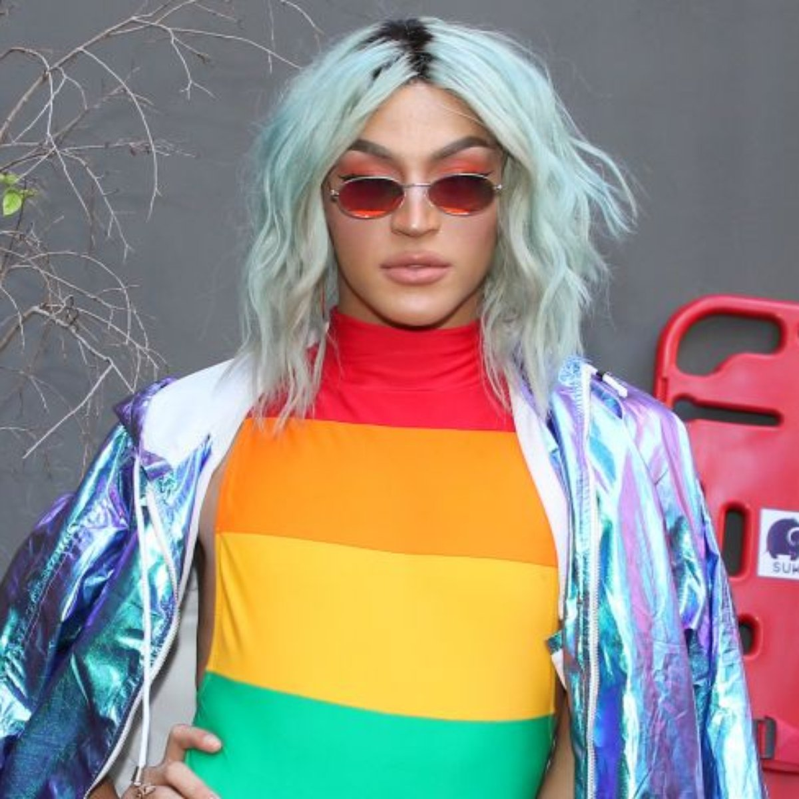

Jaloo
Jaime Melo, mais conhecido pelo nome artístico Jaloo, é um cantor, compositor e DJ. Suas músicas de cunho alternativo já foram temas de novela. Além do som, outro ponto que se destaca no trabalho do cantor é o visual andrógeno e os conceitos dos vídeo clipes sempre muito pensados e artísticos.
Liniker
Dono de um visual bastante extravagante que desafia as questões de gênero e de uma voz arrebatadora, o cantor Liniker evita os rótulos: “Eu não sei se sou homem ou se sou mulher. Eu sei que sou bicha, preta e é isso. Por que eu preciso estar me colocando se sou trans? Vamos viver as nossas diferenças”, disse o cantor em uma de suas entrevistas;

Cazuza
Se existe uma palavra que define este cantor é “Coragem”, mais do que se assumir gay, Cazuza teve peito de assumir publicamente o HIV em plenos anos 80 onde a doença era profundamente estigmatizada e praticamente uma sentença de morte. Ele conseguiu eternizar tudo em suas músicas, como no trecho de Ideologia “O meu prazer agora é risco de vida”.
Cássia Eller
Grande nome do rock nacional, Cássia Eller teve o privilégio de ser servida por letras de Caetano Veloso, Nando Reis e Renato Russo. Inclusive, o próprio renato Russo quando cantou sua música “Por enquanto” em meio ao show assumiu que preferia a música na versão da cantora.
Pablo Vittar
Pabllo Vittar é uma cantora drag queen brasileira, que ganhou destaque nacional devido ao clipe da sua música “Open Bar”, uma versão em português de “Lean On”, do Major Lazer. Foi no carnaval 2017 que a drag se consolidou de vez com a música “Todo dia” que foi o grande hit da temporada.

Ana Carolina
A cantora nunca fez questão de esconder a sua bissexualidade e sempre tratou o assunto com muita naturalidade: “Em relação à sexualidade, existe uma coisa muito simples: você olha para a pessoa, a deseja ou não, gosta ou não, nada é complicado”, explicou a cantora em entrevista.
Sandra de Sá
Expoente da música popular brasileira, com denso enfoque em black music, em entrevista à jornalista Marília Gabriela, Sandra de Sá confirmou sua homossexualidade. “É uma descoberta, é você se perceber. A homossexualidade é como a inteligência ou qualquer outro dom. Você desenvolve”.
Ângela Ro Ro
Ângela Maria Diniz Gonçalves, mais conhecida como Angela Ro Ro hoje com 70 anos, merece todo nosso respeito pois foi a primeira cantora lésbica a se assumir publicamente no Brasil;

Renato Russo
Grande nome do rock nacional, Renato Russo dominou os anos 80 com suas letras carregadas de poesia e crítica social. Bissexual, o cantor que transcendeu a música e chegou aos cinemas com filmes como “Somos tão jovens” e “Faroeste Caboclo” eternizou sua orientação sexual com a música “Meninos e meninas”;
Caetano Veloso
Um dos nomes mais reconhecidos internacionalmente do Brasil, Caetano Veloso foi o primeiro a compor uma canção inspirado em um muso, “Menino do Rio” falava da admiração do cantor pelos dotes físicos de um surfista. Tratava o tema da homossexualidade de maneira lírica e delicada. Além disso, Caetano se cansou de interpretar canções fazendo o eu – lírico feminino, deixando no ar sua condição sexual ambígua.
Ney Mato Grosso
Um dos cantores mais completos de todos os tempos, Ney Matogrosso consegue ser ótimo compositor, cantor e performer. Se hoje temos cantores como Liniker e Johnny Hooker que transcendem as questões de gênero com suas roupas e maquiagens, devemos muito ao Ney Matogrosso que fazia isso desde a época de Secos e Molhados com muita propriedade e carão. Uma curiosidade sobre o Ney é que ele não só ajudou a produzir o álbum “Ideologia” de Cazuza como os dois também tiveram um romance.
Daniela Mercury
Famosa cantora de axé, dona dos carnavais e dos trios elétricos por todo Brasil. Após se declarar lésbica, Daniela Mercury deu um testemunho pessoal na ONU para ajudar a combater o preconceito.

Willi Ninja
Willi Ninja foi o precursor do estilo, junto de seu grupo, e foi o principal voguer e ainda considerado o melhor por muitos.
Madonna
O Vogue se tornou conhecido popularmente através dos ícones pop como Madonna, que utilizou o Vogue em suas performances musicais, inclusive tem uma música de mesmo nome.
Leiomy
Conhecida como a "Mulher Maravilha da Vogue", é uma dançarina e membro da trupe de dança "Vogue Evolution", apresenta os 5 elementos de vogue: Hand Performance, Catwalk, Duckwalk, Spin and Dip, Floor Performance.